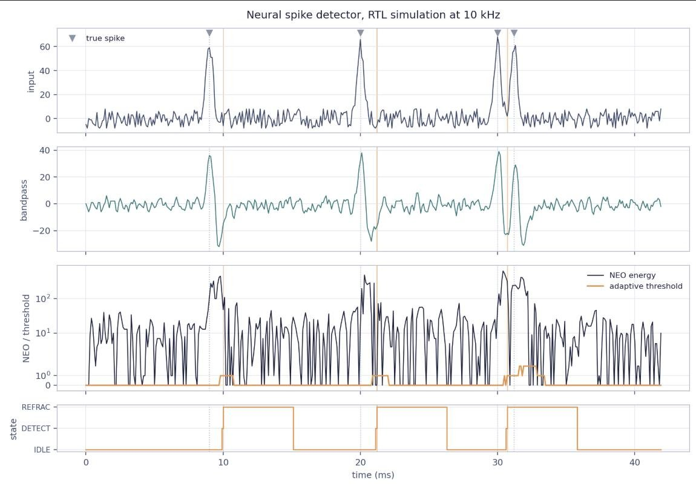
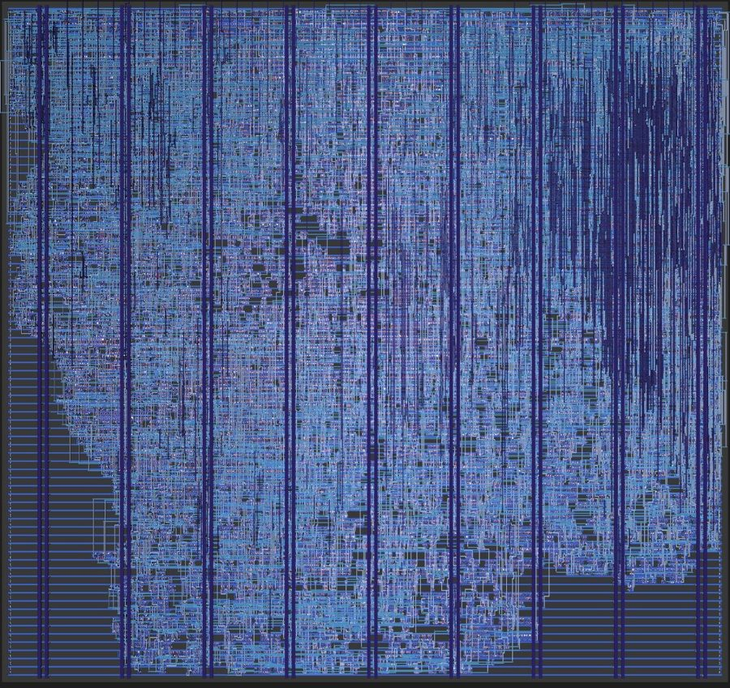

Neural spike detector ASIC
A real-time digital spike detector I designed and taped out independently, start to finish: RTL, verification, hardening, and GDS signoff. Silicon expected November 2026. Source on GitHub →
Signal chain
How it works
Bandpass filter. A second-order IIR bandpass isolates 300–3000 Hz, where extracellular action potentials live, rejecting low-frequency drift below it and noise above it. The datapath is pipelined so each multiply-accumulate stage completes in a cycle and the filter doesn't become the critical timing path.
Nonlinear energy operator. The NEO combines each sample with its neighbors to estimate instantaneous signal energy. Because it responds to both amplitude and frequency, it sharply emphasizes the fast high-amplitude transients of a spike relative to background noise — much easier to threshold than the filtered signal itself.
Adaptive threshold. Rather than a fixed threshold, an exponentially weighted moving average tracks the local noise floor, and a spike is flagged when the NEO output exceeds k·σ². This keeps detection working as noise levels drift, which they do over the life of an implant.
Refractory hold. After a detection the FSM emits a 7-bit rolling timestamp and holds off for a configurable refractory period, so one action potential produces one detection rather than several.

Area budgeting
The hard constraint was fitting a single Tiny Tapeout tile. Rather than shrinking things arbitrarily, I budgeted filter order, EWMA width, and timestamp width directly against detection accuracy, so each bit spent was a bit that measurably bought something.
Configurability
The threshold multiplier (default 5) and the refractory period (default 50 samples) are configurable over a 3-wire SPI interface, so the detector can be tuned post-fabrication for different electrode and noise conditions without respinning anything.
Verification
A cocotb and Icarus Verilog testbench runs under CI and checks detection on synthetic spike trains, false-positive rejection on pure noise, refractory behavior on closely spaced spikes, and SPI configuration. The whole design was verified equivalent to a floating-point reference model, then re-run post-layout at the gate level to confirm synthesis and place-and-route preserved behavior.

| Parameter | Value |
|---|---|
| Process | GlobalFoundries 180 nm, Tiny Tapeout GF26b shuttle |
| Input | 8-bit signed, 10 kHz sample rate |
| Passband | 300–3000 Hz |
| Configuration | 3-wire SPI: threshold multiplier, refractory period |
| Flow | Verilog RTL → cocotb/Icarus under CI → LibreLane → GDS signoff |
| Status | Taped out; silicon expected November 2026 |